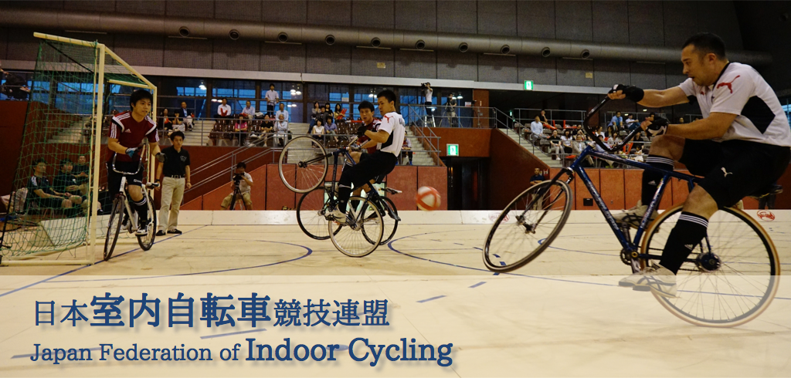
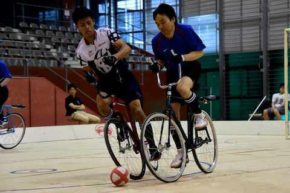
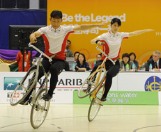

競技紹介
サイクルサッカー

自転車とサッカーの融合、サイクルサッカー。自転車ならではのスピード感、テクニック、球技ならではのシュート打音、パスワーク、ボディコンタクト、あらゆる角度で楽しんでいただけるスポーツです。
サイクルフィギュア

自転車版フィギュアスケート、その名もサイクルフィギュア。自転車だからこそ生み出せるダイナミックさ、自転車を超越した美技、そこに必要とされる繊細さ、あらゆる要素を含んだ競技です。